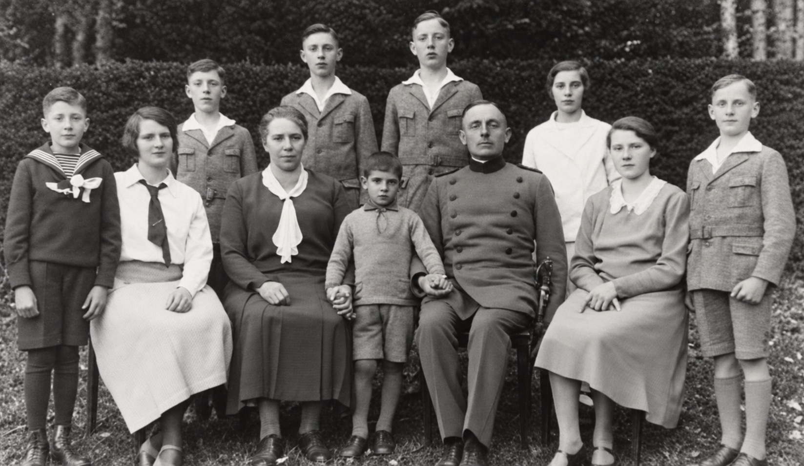
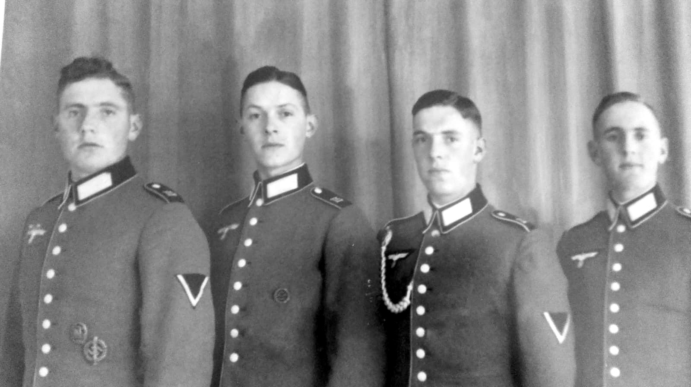
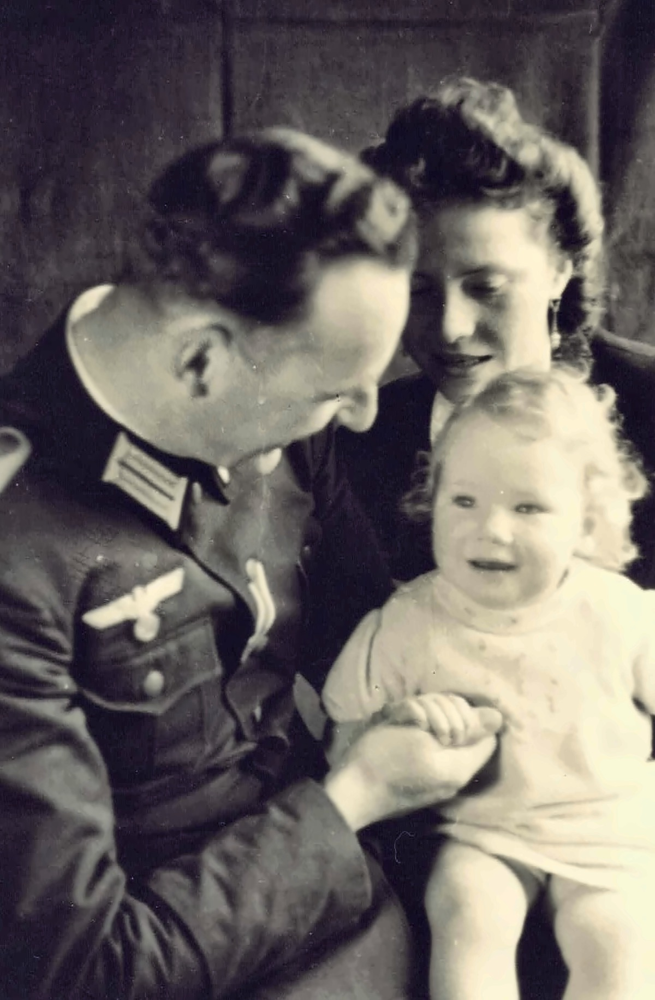
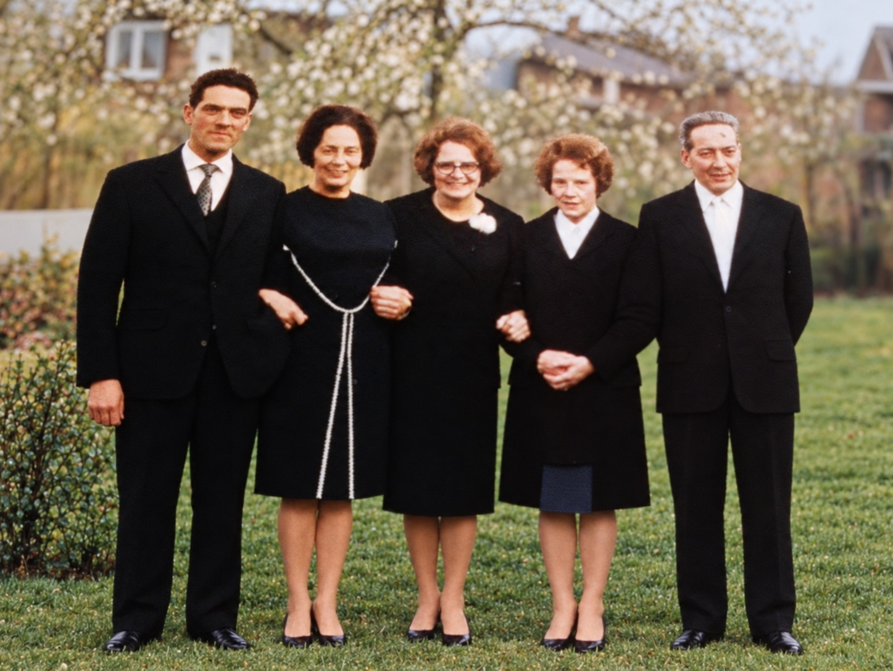
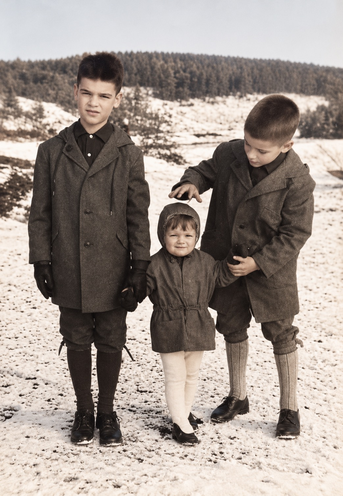
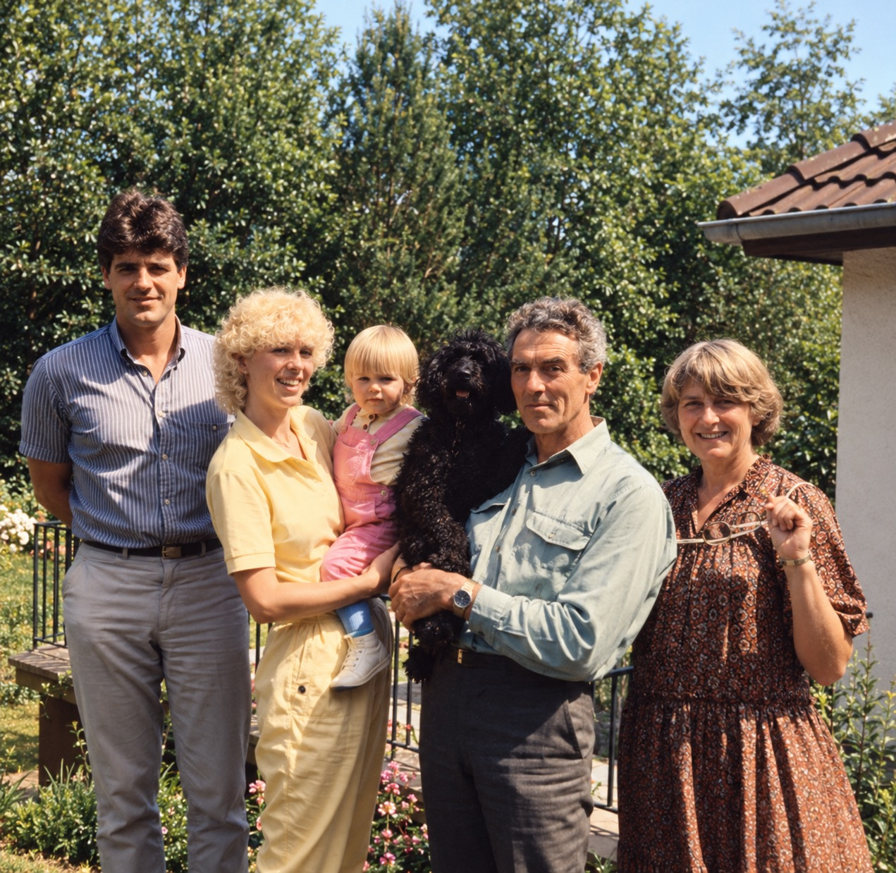

Wenn ich heute auf die Geschichte der Familie Schönberg zurückblicke, fällt mir auf, wie viel Unglück sich über mehrere Generationen angesammelt hat. Natürlich gibt es in jeder großen Familie Schicksalsschläge, Streitigkeiten und gescheiterte Lebensentwürfe. Auch bei den Schweigerers war nicht alles harmonisch. Aber bei den Schönbergs scheint etwas hinzugekommen zu sein: Es fehlte der innere Zusammenhalt, der Menschen auch dann noch verbindet, wenn sie einander enttäuschen oder schwere Zeiten durchstehen müssen. Stattdessen begegnen uns immer wieder Entfremdung, abgebrochene Beziehungen und das Schweigen über unangenehme Dinge.
Dabei spreche ich nicht über irgendeine Familie. Die Schönbergs sind ebenso meine Familie wie die Schweigerers. Meine Mutter war eine geborene Schönberg, Ludwig Philipp war mein Großvater, Josef und Ludwig meine Onkel, Maria und Hilde meine Tanten. Vielleicht beschäftigt mich ihre Geschichte gerade deshalb so sehr, weil ich väterlicherseits eine andere Erfahrung gemacht habe. Auch dort gab es Krieg, Krankheit und Tod. Trotzdem habe ich die Schweigerers als Familie erlebt, deren Mitglieder sich trotz aller Unterschiede zugehörig fühlten. Warum war das bei den Schönbergs so viel schwieriger? Eine abschließende Antwort gibt es nicht. Aber die Frage lässt mich nicht los.
Ludwig Philipp Schönberg und seine Kinder
Am Anfang steht mein Großvater Ludwig Philipp Schönberg, geboren 1883. Er war Förster und mit Anna Maria Weber verheiratet, die aus einer Bauernfamilie in Steinborn (Eifel) stammte. Die beiden hatten zehn Kinder, sechs Söhne und vier Töchter. Paula starb schon als kleines Kind. Bemerkenswert finde ich, dass sie in den Familienerzählungen nie vorkam. Über schmerzliche Ereignisse wurde nicht gern gesprochen.

Vier der sechs Söhne, Max, Hans, Peter und Klaus, fielen im Zweiten Weltkrieg. Meine Schwester Marlene hat einmal vermutet, die Jungen hätten vielleicht auch deshalb so bereitwillig in den Krieg ziehen wollen, weil sie von zu Hause weg wollten. Ob das stimmt, wissen wir nicht. Keiner von ihnen kann uns erzählen, was ihn damals bewegte.

Ludwig Philipp galt als gerecht, aber streng. So hat ihn meine Mutter Magdalene, genannt Lenchen, beschrieben. Mein Bruder Heinz-Josef erzählte, der Großvater sei bei Besuchen zunächst in den Garten gegangen, um sich eine Rute zu schneiden, mit der er die Kinder bei Bedarf züchtigen konnte. Auch die Geschichte, dass Kinder zur Strafe alle unerlaubt gepflückten Kirschen aufessen mussten, passt in dieses Bild. Gehorsam gehörte zu seinem Verständnis von Erziehung.
Man sollte den Mann in seiner Zeit sehen. Körperliche Züchtigung war üblich, und von Vätern erwartete man Autorität, nicht unbedingt Einfühlungsvermögen. Dazu kamen Verluste, die kaum vorstellbar sind: 1941 starb seine Frau Anna Maria; vier seiner Söhne kamen aus dem Krieg nicht zurück. Vielleicht machte ihn das noch härter. Aber Strenge und Pflichtgefühl ersetzen keine Zuneigung. Ein Kind kann lernen, dem Vater zu gehorchen, ohne Vertrauen zu ihm zu entwickeln. Und später gibt es möglicherweise genau das weiter, was es selbst erfahren hat.
Die Kriegsbriefe meiner Mutter geben einen direkten Einblick in die Familie. Nach dem Tod ihrer Mutter erlebte Lenchen den Vater als verändert und haltlos. Sie hatte den Eindruck, er suche Ablenkung, statt mit seinen Kindern über seine Sorgen zu sprechen. Als er 1942 Maria Dötsch, genannt Maichen, heiratete, bemühte meine Mutter sich zunächst um ein gutes Verhältnis. Doch allmählich fühlte sie sich mit ihrer kleinen Tochter Marlene im eigenen Elternhaus nur noch geduldet. Besonders schmerzte sie, dass ihr Vater sich nicht schützend vor seine Kinder stellte. Der Streit um Möbel, die Lenchen als Teil des Nachlasses ihrer Mutter betrachtete, beschädigte das Vertrauen zusätzlich.

Im Februar 1943 verließ sie mit Marlene das Forsthaus und zog zunächst zu ihren Schwiegereltern nach Neidenbach, später in eine kleine eigene Wohnung. Ihre Briefe zeigen, wie erleichtert sie war und wie sehr sie zugleich unter der Entfernung von ihrem Vater litt. Sie suchte weiterhin den Kontakt und freute sich über seine Besuche. Sie liebte ihn, konnte sein Verhalten aber nicht verstehen. Vielleicht liegt hier ein Schlüssel: Zwischen dem, was Ludwig Philipp für seine Kinder empfand, und dem, was bei ihnen ankam, lag offenbar eine beträchtliche Entfernung.
Die nächste Generation

Von den Töchtern hatte Maria, die Willi Sohlbach heiratete, wohl das vergleichsweise ruhigste Leben. Auch sie erlitt einen schweren Schicksalsschlag: Sie bekam ein Kind mit einem Hydrozephalus. Es verstarb kurz nach der Geburt. Auch darüber wurde in der Familie später nicht gesprochen. Maria und Willi nahmen Birgit als Adoptivtochter auf. Nach allem, was ich weiß, wuchs sie liebevoll auf, auch wenn sie erst später von ihrer Adoption erfuhr. Es gab also schon gelungene Beziehungen in dieser Familie, die man bei aller Beschäftigung mit ihrem Unglück nicht übersehen sollte.

Besonders beschäftigt mich Josef Schönberg. Er gehörte zu den beiden Söhnen, die den Krieg überlebten. Er stand meiner Mutter sehr nahe. Krieg und Gefangenschaft hatten ihn verändert. Er hatte seinen Glauben an Gott und wohl auch viel Vertrauen in die Menschen verloren. Später wurde er ein leidenschaftlicher Hundekenner und -ausbilder. Seine Hunde gehorchten ihm aufs Wort.
Josefs Tochter Ulla hat mir erzählt, dass er ähnliche Vorstellungen von Disziplin auf seine Söhne übertrug. Eine erschreckende Erinnerung betrifft eine geöffnete Schere, die den Jungen unter das Kinn gebunden wurde, damit sie bei Tisch den Kopf gerade hielten. Ich vermute, Josef sah sich selbst nicht als grausamen Vater. Vielleicht glaubte er sogar, seine Kinder durch Härte auf das Leben vorzubereiten. Das entschuldigt nichts, hilft aber, den Menschen nicht auf sein Verhalten zu reduzieren. Wer in Krieg und Gefangenschaft erfahren hat, wie gefährlich die Welt sein kann, verwechselt möglicherweise Schutz mit Kontrolle.
Josefs Frau Marianne habe ich als eher kühl erlebt. Auch sie hatte nach späteren Erzählungen ihre eigenen Schwierigkeiten, darunter Probleme mit Alkohol. Die Söhne Dieter und Jörg scheinen wenig Raum für ihre eigenen Wünsche gehabt zu haben. Dieter träumte vom Fliegen und erwarb tatsächlich einen Sportpilotenschein. Eine dauerhafte berufliche Existenz gelang ihm nicht. Beziehungen und finanzielle Verhältnisse wurden schwierig; schließlich lebte er auf den Bahamas, wo er jung starb. Über seine letzten Jahre wissen wir so gut wie nichts.

Jörg fühlte sich nach Erzählungen seiner Tochter Sonja Dieter gegenüberbenachteiligt. Während dem Bruder größere Möglichkeiten zugestanden worden seien, sollte er eine handwerkliche Ausbildung machen. Er wurde Schlosser, ging nach Berlin, gründete eine Familie und bekam mit Heidi seine Tochter Sonja. Später kehrte er in die Eifel zurück, als seine Eltern Unterstützung brauchten. Sein Leben wurde zunehmend von Alkoholproblemen, schwierigen Beziehungen und finanziellen Konflikten geprägt. Er starb allein zu Hause.
Es wäre zu einfach, die Lebenswege beider Söhne allein mit Josefs Erziehung zu erklären. Menschen reagieren verschieden auf ähnliche Erfahrungen, und wir kennen ihre inneren Beweggründe nicht. Trotzdem frage ich mich, was aus ihnen hätte werden können, wenn sie mit ihren Schwächen und eigenen Vorstellungen mehr Anerkennung erfahren hätten. Vielleicht suchte Dieter in seinen Träumen einen Ausweg, während Jörg lange gegen das Gefühl ankämpfte, nicht sein eigenes Leben geführt zu haben. Mehr als eine Vermutung ist das nicht.
Besonders bewegt mich, was Ulla über Josefs letzte Lebenszeit erzählt hat. Er sei milder geworden und habe über seine Erziehungsmethoden nachgedacht. Kurz vor seinem Tod fragte er sie, ob sie glaube, dass er schuld am Tod seines Sohnes Dieter sei. Das ist eine erschütternde Frage. Wir können sie nicht beantworten, und ich möchte daraus auch kein nachträgliches Urteil ableiten. Aber sie zeigt, dass Josef selbst über seine Verantwortung nachdachte. Vielleicht ahnte er, dass zwischen seinen Absichten und dem, was er bei seinen Kindern bewirkt hatte, eine schmerzliche Kluft lag. Dass ihn diese Frage bis an sein Lebensende beschäftigte, lässt mich ihn mit größerem Mitgefühl betrachten.
Auch Ulla hatte Verletzungen zu tragen. Erst als Erwachsene von etwa 50 Jahrenerfuhr sie, dass Josef nicht ihr leiblicher Vater war - und dies nicht von ihrer eigenen Familie. Das lange Schweigen erschütterte ihr Vertrauen, obwohl Josef sie immer als seine Tochter angenommen hatte und sie ihm im Alter nahestand. Mit Marianne und später auch innerhalb der Geschwisterbeziehungen kam es zu Entfremdungen, unter anderem im Zusammenhang mit dem Elternhaus. Wieder zeigt sich, wie schwer es in dieser Familie offenbar war, Verletzungen offen anzusprechen, bevor sie unüberwindbar wurden.
Bei Hilde Schönberg, der jüngsten der überlebenden Töchter von Ludwig Phillip, begegnet uns Ähnliches. Sie heiratete Fritz Richels, der früh starb und ebenfalls Alkoholprobleme gehabt haben soll. Ihre Söhne Klaus-Peter und Johannes entfremdeten sich später voneinander. Auch Auseinandersetzungen um den Familienbesitz in Steinborn hinterließen Spuren. Was im Einzelnen geschah, kann ich nicht zuverlässig rekonstruieren.
Mein Patenonkel Ludwig, der andere überlebende Sohn, ist mir dagegen in guter Erinnerung geblieben. Er heiratete Carola; ihre Kinder waren Doris und Jürgen. Doris starb früh an Krebs und hinterließ zwei Kinder. Dass später auch hier Kontakte verloren gingen und Jürgen heute kaum etwas über die Kinder seiner Schwester weiß, macht mich betroffen. Nicht jeder Kontaktabbruch muss dieselben Ursachen haben. Auffällig bleibt aber, wie häufig familiäre Verbindungen in der nächsten Generation nicht mehr gepflegt wurden.
Was sich fortgesetzt haben könnte
Wenn ich die Geschichten nebeneinander stelle, sehe ich zwei unterschiedliche Arten von Unglück. Der Zusammenhalt einer Familie kann den Tod von Kindern im Krieg, eine schwere Erkrankung oder einen frühen Krebstod nicht verhindern. Wohl aber beeinflusst er, wie Menschen solche Erfahrungen miteinander durchstehen. Bei den Schönbergs habe ich oft den Eindruck, dass jeder mit seinem Schmerz allein blieb. Vielleicht war nicht die Strenge allein das Problem, sondern vor allem die Schwierigkeit, Schwäche zuzulassen, um Hilfe zu bitten und nach einem Streit wieder aufeinander zuzugehen.
Das Schweigen zieht sich durch mehrere Generationen: über die früh verstorbene Paula, über Marias erstes Kind, über Ullas Herkunft und über manche späteren Lebenswege. Vielleicht sollte es vor Scham, Streit oder schmerzlichen Erinnerungen schützen. Doch Verschwiegenes verschwindet nicht. Es bleibt als Unsicherheit zurück und kann Vertrauen untergraben. Ähnlich verhält es sich mit Konflikten um Möbel, Häuser und Erbschaften. Hinter ihnen stehen oft ältere ungelöste Fragen: Wer wurde bevorzugt? Wer hat sich gekümmert? Wer wurde übergangen? Dann trägt ein materieller Streit plötzlich das Gewicht von Jahrzehnten.
Auch die wiederkehrenden Alkoholprobleme fallen auf. Daraus lässt sich keine gemeinsame Ursache ableiten. Aber Alkohol kann für Menschen, die wenig andere Wege im Umgang mit Kränkungen und Einsamkeit kennen, vorübergehend Erleichterung versprechen und zugleich die Beziehungen weiter beschädigen. Es entsteht ein Kreislauf, in dem sich Enttäuschung und Rückzug gegenseitig verstärken können.
All das sind Deutungen, keine Diagnosen. Als Arzt weiß ich, wie einfach es ist, aus Beobachtungen eine schlüssige Erklärung zu bauen. Familiengeschichten sind jedoch keine klinischen Fallberichte. Wir kennen oft nur die schmerzlichen Episoden; die gewöhnlichen guten Tage geraten in Vergessenheit. Deshalb möchte ich Ludwig Philipp, Josef oder ihren Nachkommen keine Rollen zuweisen, aus denen sie sich nicht mehr befreien können.
Meine eigene Herkunft
Ich komme dabei immer wieder auf meine Mutter zurück. Sie war eine Schönberg und fand durch die Ehe mit meinem Vater eine andere Familie. Vielleicht fand sie dort auch etwas, das ihr im eigenen Elternhaus gefehlt hatte. Jedenfalls habe ich sie nicht als einen Menschen erlebt, der die Härte ihres Vaters einfach an seine Kinder weitergab. Das zeigt, dass sich Erfahrungen nicht zwangsläufig von einer Generation auf die nächste übertragen.
Die Schweigerers waren ebenfalls vom Krieg getroffen. Mein Vater verlor ein Bein, seine Brüder Josef und Arthur starb jung, und es gab Sorgen und Konflikte genug. Trotzdem erinnere ich mich an eine Selbstverständlichkeit des Zusammengehörens. Man konnte sich streiten, ohne dass die Zugehörigkeit grundsätzlich infrage stand. Vielleicht habe ich dadurch ein Bild von Familie mitbekommen, das mir lange selbstverständlich erschien. Erst der Blick auf die Schönbergs zeigt mir, wie wenig selbstverständlich es ist.
Lange habe ich vor allem die Schweigerers als meine Herkunft wahrgenommen. Dort waren die Beziehungen vertrauter und die Erinnerungen dichter. Die Schönbergs blieben eher einzelne Personen und Episoden. Durch die Briefe meiner Mutter, den Stammbaum und die Gespräche mit Ulla und Sonja ist mir deutlicher geworden, dass ich damit einen Teil meiner eigenen Geschichte nur am Rande betrachtet hatte.
Die Geschichte der Schönbergs ist auch mein Vermächtnis, nicht als ererbte Schuld, sondern als Teil dessen, woher ich komme. Ich trage beide Familiengeschichten in mir: die Erfahrung einer einigermaßen intakten väterlichen Familie und die Erinnerung an eine mütterliche Familie, in der so viele Beziehungen verloren gingen. Vielleicht macht mich gerade dieser Gegensatz so betroffen. Ich kann mich nicht auf die Seite der Schweigerers stellen und von dort über die Schönbergs urteilen. Ohne meine Mutter, ohne Ludwig Philipp und Anna Maria und ohne all die Menschen, deren Leben ich hier zu verstehen versuche, gäbe es mich nicht. Auch das Schwierige gehört zu meiner Herkunft.
Was geblieben ist
Ich bin Ulla und Sonja dankbar, dass sie mir von ihren Erfahrungen erzählt haben. Dadurch sehe ich Josef nicht nur als strengen Vater, sondern auch als einen Mann, der sich am Ende seines Lebens schmerzhafte Fragen stellte. Und ich sehe in Jörg nicht nur die Schwierigkeiten seiner späteren Jahre, sondern auch den Jungen mit eigenen Wünschen und den Vater, an den Sonja ihre Erinnerungen hat. Beide haben ihre eigene Sicht auf diese Geschichte, die meine Überlegungen nicht ersetzen können und sollen.
Vielleicht ist es bereits ein Fortschritt gegenüber früheren Generationen, dass wir miteinander darüber sprechen können. Wir werden die Entscheidungen unserer Vorfahren nicht ungeschehen machen und die zerbrochenen Beziehungen nicht nachträglich heilen. Aber wir können versuchen, Menschen nicht auf das zu reduzieren, was ihnen misslungen ist. Dass Ulla und Sonja miteinander verbunden sind und mich an ihren Erinnerungen teilhaben lassen, bedeutet mir viel.
Ich habe dies nicht geschrieben, um über die Schönbergs zu urteilen, sondern um einen Teil meiner eigenen Herkunft besser zu verstehen. Die vielen Verluste und Entfremdungen machen mich traurig, gerade weil es meine Familie ist. Vielleicht kann aus der Beschäftigung mit dieser Vergangenheit wenigstens eins erwachsen: dass wir heute offener miteinander umgehen, einander mit größerer Nachsicht betrachten und die Zugehörigkeit auch dann nicht aufgeben, wenn wir uns nicht in allem verstehen.